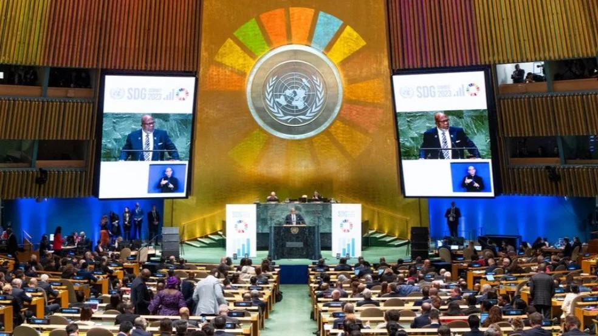
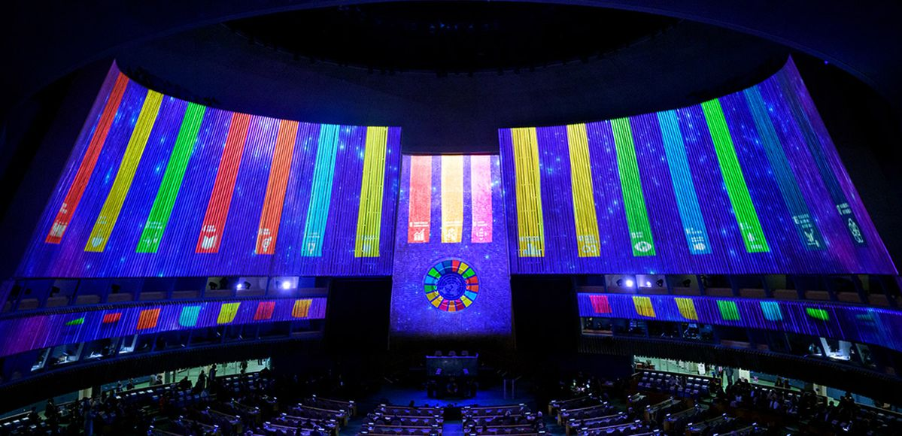
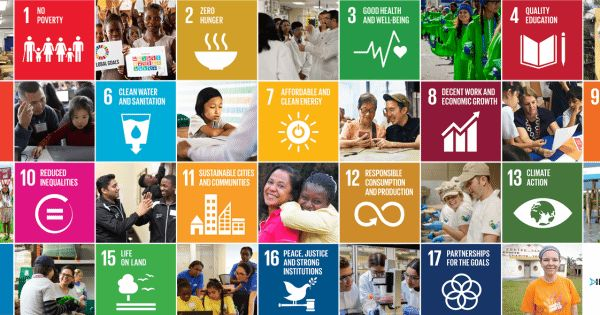
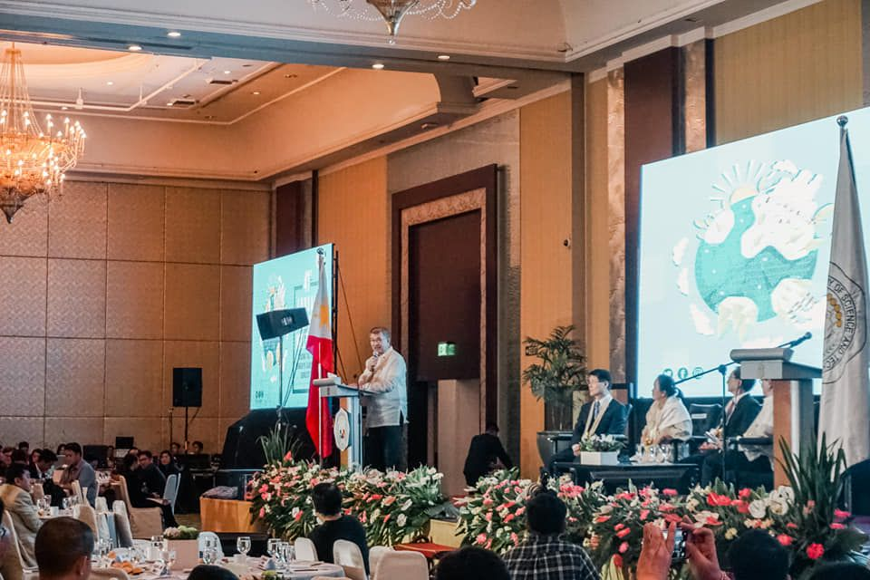

Apa Itu SDGs?
SDGs (Sustainable Development Goals) atau Tujuan Pembangunan Berkelanjutan merupakan kerja sama internasional dengan 17 tujuan global yang tersebar ke dalam 4 pilar yaitu, pilar pembangunan sosial, pilar pembangunan ekonomi, pilar pembangunan lingkungan, dan pilar hukum dan tata kelola. Hal tersebut dirancang untuk menciptakan dunia yang lebih sejahtera, adil, dan berkelanjutan bagi seluruh umat manusia. Program ini menekankan pentingnya kolaborasi antarnegara dalam mengatasi tantangan-tantangan global seperti kemiskinan, kesenjangan, perubahan iklim, serta menjaga kelestarian lingkungan demi masa depan yang lebih baik. Program ini ditetapkan hingga tahun 2030 dan memiliki 169 target spesifik yang harus dicapai. Tujuan utama SDGs adalah untuk mencapai pembangunan berkelanjutan tanpa mengorbankan kemampuan generasi mendatang untuk memenuhi kebutuhan mereka.
SDGs di Indonesia sudah dimulai sejak 2016 dibawah koordinasi PPN (Proses Pembangunan Nasional). Hal tersebut sudah diwujudkan dalam bentuk komitmen politik pemerintah dalam melaksanakan agenda SDGs yang dilaksanakan secara partisipatif dengan melibatkan banyak pihak seperti pemerintah tingkat nasional maupun daerah, kelompok-kelompok masyarakat, organisasi masyarakat dan media, dan lain-lain. Contoh implementasi di Indonesia adalah Program Indonesia Bersih dan Bebas Sampah Plastik 2025, Program Desa Mandiri dan Desa SDGs, Gerakan Nasional Revolusi Mental dan Program Keluarga Harapan (PKH), dan lain-lain.
17 Tujuan SDGs
- Tanpa kemiskinan : Menghapus kemiskinan ekstrem dan meningkatkan kesejahteraan semua orang.
- Tanpa kelaparan : Mengakhiri kelaparan dan memastikan akses makanan bergizi.
- Kehidupan sehat dan sejahtera : Menjamin layanan kesehatan yang baik untuk semua.
- Pendidikan berkualitas : Memberikan pendidikan inklusif dan bermutu.
- Kesetaraan gender : Menghapus diskriminasi dan kekerasan berbasis gender.
- Air bersih dan sanitasi layak : Menjamin air bersih dan sanitasi yang aman.
- Energi bersih dan terjangkau : Akses energi yang ramah lingkungan dan terjangkau.
- Pekerjaan layak dan pertumbuhan ekonomi : Meningkatkan kesempatan kerja dan ekonomi yang inklusif.
- Industri, inovasi, dan infrastruktur : Pembangunan infrastruktur dan teknologi berkelanjutan.
- Berkurangnya kesenjangan : Mengurangi ketimpangan dalam dan antarnegara.
- Kota dan komunitas berkelanjutan : Mewujudkan kota yang aman, nyaman, dan ramah lingkungan.
- Konsumsi dan produksi yang bertanggung jawab : Penggunaan sumber daya yang bijak dan minim limbah.
- Penanganan perubahan iklim : Mengurangi dampak perubahan iklim dan memperkuat mitigasi.
- Ekosistem laut : Melindungi laut, pesisir, dan sumber daya maritim.
- Ekosistem daratan : Melestarikan hutan, tanah, dan keanekaragaman hayati.
- Perdamaian, keadilan, dan kelembagaan yang tangguh : Menciptakan masyarakat aman, adil, dan lembaga efektif.
- Kemitraan untuk mencapai tujuan : Kerja sama global untuk mendukung semua tujuan SDGs.